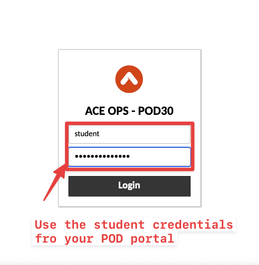
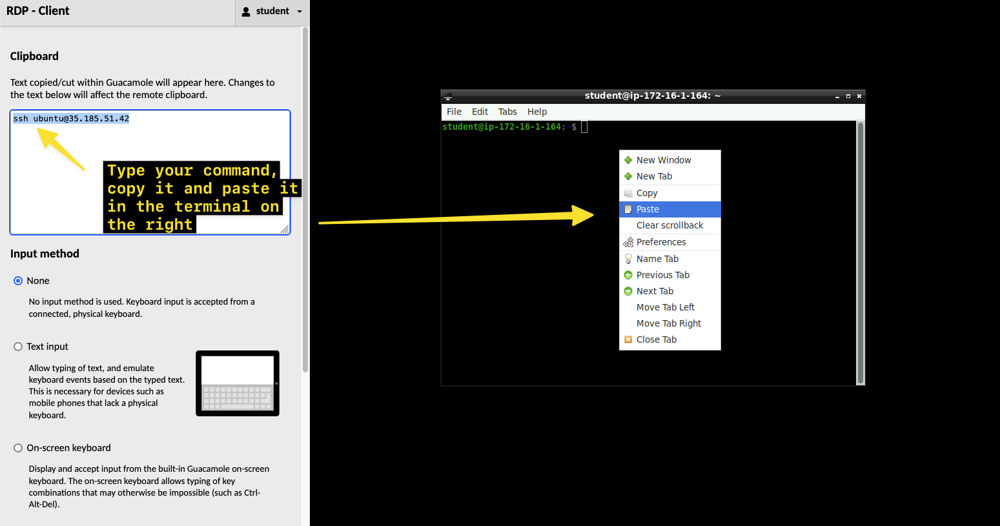
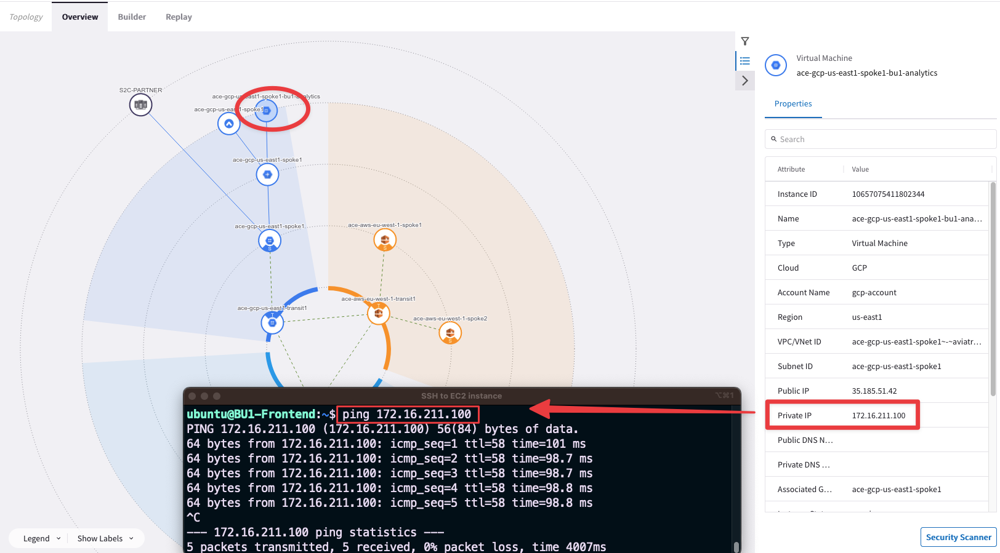

Lab 1 - Network Domains#
1. SCENARIO#
Infrastructure was segmented recently into 2 network domains: BU1 & BU2.
You are requested to ascertain the segregation between the two network domains.
 Figure 2: Segmentation
Figure 2: Segmentation
2. VALIDATION REQUEST#
Go to CoPilot > Settings > Resources > Task Server
Ensure that both Fetch GW Routes and Fetch VPC Routes intervals are set to “1 second” each and then click on SAVE.
 Figure 3: Task Server
Figure 3: Task Server
 Figure 4: Fetch GW Routes
Figure 4: Fetch GW Routes
 Figure 5: Fetch VPC Routes
Figure 5: Fetch VPC Routes
Afterwards, click on Commit.
 Figure 6: Commit
Figure 6: Commit
Warning
These are very aggressive settings. In a Production environment, you should NOT set these intervals that frequently!
Verify connectivity between clients within the same BU:
SSH to the BU1 Frontend in AWS.
From BU1 Frontend ping BU1 Analytics in GCP.
There are two methods for SSH to any instances inside the multicloud infrastructure of this lab:
Using an SSH client from your laptop (recommended method!).
 Figure 7: Public IP
Figure 7: Public IP
 Figure 8: DNS name
Figure 8: DNS name
Using the Apache Jumpbox from the POD Portal, for example if you are within your corporate network and an inbound restriction is applied on port 22.
 Figure 9: Jumpbox
Figure 9: Jumpbox
 Figure 10: Apache Guacamole Portal
Note
Please bear in mind that if you decide to use the Jumpbox, Copy and Paste does not work directly from the host machine, therefore activate the Guacamole Menu, that is a sidebar which is hidden until explicitly shown. On a desktop or other device which has a hardware keyboard, you can show this menu by pressing Ctrl+Alt+Shift on Windows machine (Control+Shift+Command on Mac).
 Figure 11: Guacamole Menu
Tip
The IP addresses can be easily retrieved either from the Properties section of each Virtual Machine on the Topology, or alternatively, you can retrieve the DNS symbolic name from your personal POD portal.
 Figure 12: Instance Properties
Figure 12: Instance Properties
 Figure 13: Public DNS Name
Figure 13: Public DNS Name
Ping and SSH will be successful within the same network domain!
 Figure 14: BU1 connectivity
Verify the network segregation between the two BUs:
From BU1 Frontend try to ping BU2 Mobile App.
Ping and SSH commands should not work this time, due to the separation between the two segments (i.e. these are two different Routing Domains).
 Figure 15: BU1 to BU2 fails
Figure 15: BU1 to BU2 fails
Check Network Segmentation on the CoPilot by searching segmentation and look at the Logical View.
Tip
Go to CoPilot > Networking > Network Segmentation > Overview
 Figure 16: Logical View
Figure 16: Logical View
Check the different routing tables (VRFs) maintained by any of the Transit Gateways.
Tip
Go to CoPilot > Cloud Fabric > Gateways > Transit Gateways > select the ace-aws-eu-west-1-transit gateway > Gateway Routes and filter out based on the Network Domain (i.e. either BU1 or BU2).
 Figure 17: Network Domain (aka VRF)
Figure 17: Network Domain (aka VRF)
Use FlowIQ from the POD Portal, for inspecting the NetFlow Data.
Tip
Go to CoPilot > Monitor > FlowIQ and filter based, for instance, on the destination IP 172.16.211.100 (i.e. BU1 Analytics).
Then check the Flow Exporters widget, then from the drop-down menu and select the Aviatrix Gateway widget: you will see the list of the Aviatrix gateways involved along the path.
 Figure 18: FlowIQ
Figure 18: FlowIQ
Note
On the Aviatrix Gateway widget, the very first gateway from the list is the gateway with the highest traffic (in Bytes).
Use Cloud Routes for pinpointing the originator of the route 172.16.211.0/24.
Tip
Go to CoPilot > Diagnostics > Cloud Routes and filter based on the subnet and based on the Gateway name (add the string “spoke1”).
Tip
The Originator has the egress interface that is equal to eth0 (i.e. the LAN interface), which in turn means, direct connected.
 Figure 19: Cloud Routes
Figure 19: Cloud Routes
Use Cloud Routes for pinpointing the originator of the route 10.0.0.0/24.
Tip
Go to CoPilot > Diagnostics > Cloud Routes and filter based on the subnet. Remove the previous filter!
This time you need to proceed with a recursive lookup: from any Spoke GWs check the NEXT HOP GATEWAY column and try to find the originator of 10.0.0.0/24.
Figure 20: Cloud Routes - recursive lookup